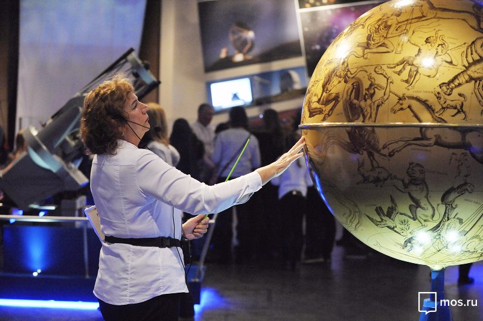

Планетарий у м. Багратионовская
Смотреть программуПостоянные программы
-
Программы Большого звездного зала
Более 24-х различных увлекательных программ вы можете увидеть по куполом-экраном диаметром — 25 метров, площадью −1000 квадратных метров. Зал оборудован с учетом новейших разработок в области проекционных технологий.
Подробнее -
Программы Малого звездного зала
Вашему вниманию предлагается выбор из 4-х потрясающих программ в единственном в России зале с купольным экраном, динамическими креслами и стерео проекцией. Такое сочетание оборудования в небольшой по размерам студии заставляет зрителя самому стать героем фильма.
Подробнее -
Программы Кинотеатра 4D
Предлагаем вам захватывающий фильм в 4D кинотеатре - это система стерео проекции, динамических кресел и спецэффектов. Великолепное качество изображения, ощущение падения в пропасть, ускорения или полета, запахи, дым, снег и многое другое погружают зрителя в реальность происходящего на экране.
Подробнее -
Онлайн программы
Мы подготовили специальную подборку бесплатных онлайн видео-программ, чтобы космос стал для вас еще ближе.
Подробнее
Образовательные мероприятия
-
Лекторий
Субботний семейный Лекторий
Учебные лекции по астрономии
Цикл лекций "Звездные уроки"
Лекция "Астрономия на сфере"
Трибуна ученого
Субботний семейный лекторий для тех, кто неравнодушен к завораживающей красоте ночного неба, кто хочет познать мир Вселенной, кто только увлекся или уже увлечен астрономией или телескопостроением.
Подробнее -
Образовательные курсы
Курсы для взрослых
Школа увлекательной науки
Астрономические кружки"
Предлагаем вам захватывающий фильм в 4D кинотеатре - это система стерео проекции, динамических кресел и спецэффектов. Великолепное качество изображения, ощущение падения в пропасть, ускорения или полета, запахи, дым, снег и многое другое погружают зрителя в реальность происходящего на экране.
Подробнее
Услуги
Экскурсии
Экскурсия по залам Урании – это прекрасное начало посещения Звездного дома, которое подготавливает и погружает наших гостей в загадочный мир астрономии и космоса. Урания – муза астрономии, ее имя носит наш музей.
ПодробнееКорпоративные мероприятия
Предлагаем Вам организовать мероприятия в Московском Планетарии! Московский Планетарий — единственная площадка в Москве, где посетителям демонстрируют уникальный визуальный контент — полнокупольные фильмы и звездные программы на самом большом в Европе куполе-экране Большого Звездного зала.
ПодробнееКвесты в планетарии
2100-й год. Люди ведут активные поиски планет, пригодных для переселения. Для поисков используется обсерватория Московского Планетария. Здесь же работает Лаборатория Межгалактических исследований, откуда ведется управление межгалактическими станциями, построенными в отдаленных уголках нашей Вселенной.
ПодробнееРомантические свидания
Московский Планетарий дает возможность подарить любимому человеку неповторимый вечер в космической атмосфере. Свидание в Планетарии позволит удивить близкого человека и подарить ему незабываемые эмоции, а также вместе стать немного ближе к нашей загадочной Вселенной.
ПодробнееДетские праздники
Детские праздничные программы Московского Планетария предназначены для детей от 4 до 12 лет и включают различные интересные задания, элементы квеста и викторины.
Подробнее
Возрастные рекомендации
-
Дети
Детские праздничные программы Московского Планетария предназначены для детей от 4 до 12 лет и включают различные интересные задания, элементы квеста и викторины.
-
Школьники
Детские праздничные программы Московского Планетария предназначены для детей от 4 до 12 лет и включают различные интересные задания, элементы квеста и викторины.
-

Взрослые
Детские праздничные программы Московского Планетария предназначены для детей от 4 до 12 лет и включают различные интересные задания, элементы квеста и викторины.
Новости
Не пропустите самые свежие новости из мира астрономии и космологии, а так же узнавайте первыми о событиях в вашем любимом Планетарии.
-
Возвращаем экскурсии по залам Урании
Группы до 5 человек вновь могут посещать зал Урании в качестве экскурсионной группы
-
Церемония вручения MAC
27 января в Московском Планетарии состоялась церемония вручения многократному чемпиону и рекордсмену СССР
-
Малые тела солнечной системы
В августе 2006 года для всех, кто интересуется астрономией, произошло знаменательное событие.
-
Астероиды и кометы
Сегодня мы начинаем новую рубрику – «Астероиды и кометы». В еженедельных публикациях мы будем рассказывать о кометах и астероидах